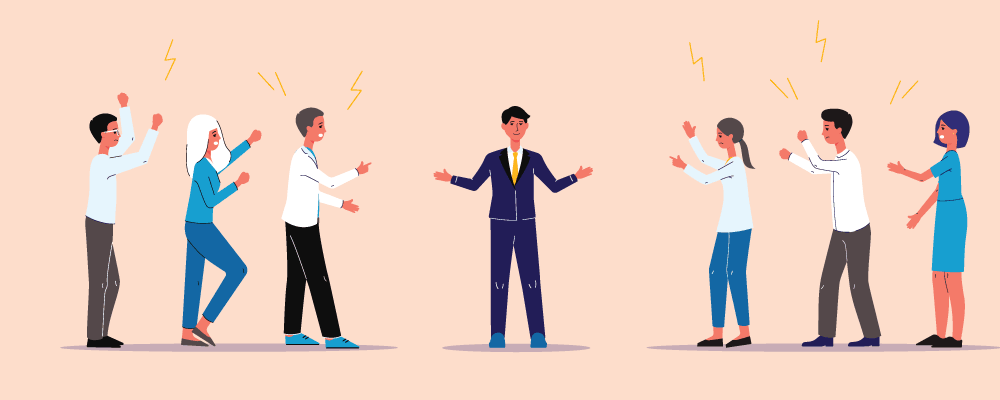
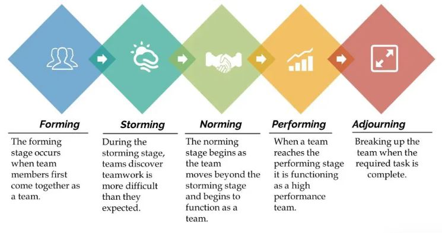
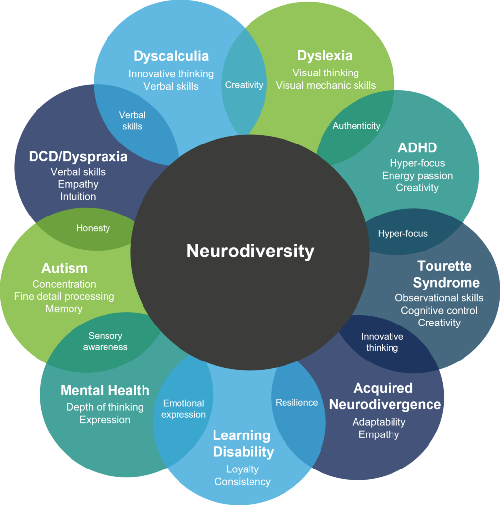
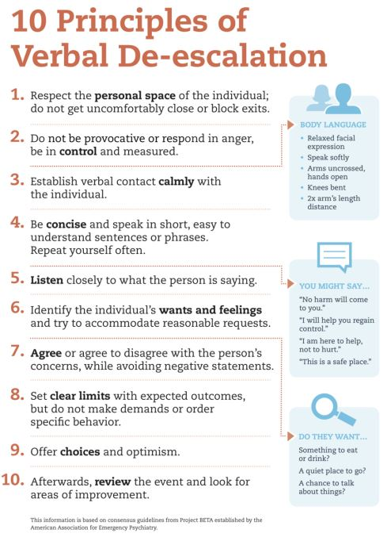

Module 1: Group Dynamics

Two groups of illustrated people yelling at each other while another individual stands between them. Image Source
1.3 Managing Groups
Estimated Completion Time for this Section: 45 minutes
Topics Covered in 1.3
1.3.1. Managing groups and people (MLO 1, MLO 2)
1.3.2. Conflict resolution (MLO 1, MLO 2)
1.3.1. Managing Groups and People
Alright, so now that we're familiar with the Tuckman model (see below for a recap), we can focus more specifically on how we manage group work and projects.
Five Stages of Team Development

Tuckman's Stages of Group Development: Forming, Storming, Norming, Performing, Adjourning. Image Source
As we've seen in 1.2, successful groups are not just the luck of the draw--like all relationships, they require work and commitment from all group members in order to perform optimally. Establishing a group contract is an excellent way to set a positive and collaborative tone for the group, but oftentimes, reality doesn't measure up to our ideals.
So, aside from putting together a plan, how can we keep groups and people functioning well together to complete a project? Let's start by reviewing some of the basics of teamwork in the video (00:10:36) below:
1.3.2. Conflict Resolution
In 1.2, you completed a Group Work Style Assessment to gain some insight into your preferred work styles. Before we continue, take a moment to complete this follow-up activity:
1.png)
Self-Reflection: Understanding Personalities in at DISC Assessment
To be clear: no personality test can completely and accurately capture something as complex as our individual personalities. However, the DISC assessment was designed to help people understand better their team personality and work styles.
Once you've determined your own DISC personality profile, review the other profiles. How might your personality and work style come into conflict with other types? Using the insights that you've gained about yourself, how would you broach dealing with conflict, particularly in the Storming stage?
The results from both assessments (the Work Styles inventory and the DISC assessment) should provide you with greater insight into not only how you tend to operate in group settings, but also insight into how others operate differently from you in group settings. By understanding these points of difference, it's easier to find ways to bridge conflict and generate solutions that meet the group's needs.
CONFLICT WITH GROUP MEMBERS
It's going to happen at some point: you're going to have conflict with one or more of your group members. The most common complaint that I hear from students is that one (or more) group members are being "lazy" and not doing their portion of the work. So, let's start with a video (00:06:39) that offers 5 tips for dealing with lazy group members:
But what do you do when, despite doing all of the necessary prep work, your group still finds itself dealing with conflict? Check out the following video (00:18:21) that gives a great breakdown of some conflict resolution strategies:

Neurodivergence in Group Settings
At some point in your education or career, you will likely work with someone who has some form of neurodivergence. Sometimes, it can be challenging to understand the perspective of someone who is operating with one or more neurodivergences. The most important thing to recognize is that, like neurotypical individuals, those with neurodivergence have unique strengths and face different challenges.
If you are experiencing conflict with someone who has neurodivergences, the important thing is not to make assumptions about their diagnosis and what they can/can not do. Instead, having an open conversation that addresses the concerning issues/behaviours, rather than the person or the neurodivergence is the best way to proceed. In other words, ask the person what they need or what supports/resources/strategies they need to achieve their goals.
It is not appropriate to diagnose or label people with neurodivergence, nor is it appropriate to pressure anyone into revealing any possible diagnoses. Rather than focus on finding a label or name for the behaviour that you're witnessing, concentrate instead on how you can best utilize the individual's strengths.

A diagram that depicts different positive skills and attributes for those who have neurodivergences, such as the creativity, authenticity, resilience, and innovative thinking. Image Source
1.3.3. Providing Feedback
As we have now seen, a large part of conflict resolution resides in negotiation and compromise. But, at the core of those skills, is the ability and willingness to empathize with another person.
If you are able to de-escalate or defuse at problem/situation before it becomes volatile, conflict resolution is much easier. The first key piece of advice that most communications experts would offer is: get face-to-face, whenever possible. With programs like Microsoft Teams, Zoom, and Skype, it's now much easier to have video chats with people. Being able to see someone's face and hear their tone will dramatically decrease your expectation bias, which will affect how you interpret tone and derive meaning from emails and text messages.
Next, you can use the following strategies to bring down tensions and heated emotions:

10 Principles of Verbal De-escalation: respect personal space; be in control of emotions; communicate calmly; be concise; listen closely; accommodate reasonable requests; avoid negative statements; set clear limits with expected outcomes; offer choices and optimism; review and look for areas of improvement. Image Source
Having difficult conversations with people is... well, difficult. Rarely do I meet people who enjoy conflict; rather, people seem to have varying degrees of comfort when it comes to processing and dealing with conflict. But, there are strategies for initiating and facilitating difficult conversations. Check out the video (00:11:36) below, which brings together our earlier discussions of group work and conflict resolution:

This completes section 1.3 of the Module 1 Content.